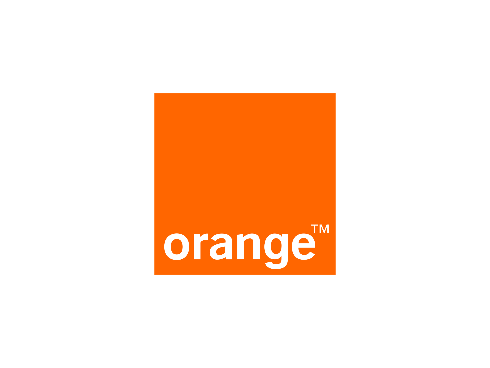

Mon CV
Télécharger CVExpérience Professionnelle
Elicap
08/2024 - 08/2024 | Développeur C#.NET/Angular 14 (FREELANCE)
Lieu: Full-Remote
Adaptation des outils de l'intranet de l'entreprise au format mobile (Outils de recherche, onglet chantier et onglet de pointage).
Open Groupe
01/2024 - 08/2024 | Analyste Concepteur Développeur C#.NET
Lieu: Strasbourg
FCR5_GPAO est un logiciel de gestion de la production des cartes qui comprend plusieurs menus et sous-menus avec de nombreuses fonctionnalités. Il facilite la fabrication rapide des cartes à l'atelier de production en proposant des fonctionnalités telles que : L'écran de préparation pour préparer les cartes à produire, L'écran de personnalisation pour le contrôle qualité, L'écran de préparation à la destruction, L'écran de destruction pour détruire les cartes présentant un défaut de fabrication, L'écran de conditionnement avec des sous-menus comme la mise en encart, la mise en sachet et la mise en packaging, etc.
Refonte et support atelier
12 personnes, dont 6 prestataires (développeurs), un chef d'équipe et 5 internes.
- Refonte des fonctionnalités de l'application FCR5_GPAO selon les nouvelles règles de gestion définies par l'AMOA
- Respect des spécifications techniques
- Analyse, conception et développement
- Support client niveau 1
- Recherche et résolution des bugs
- Déploiement sur les serveurs de tests(recette)
- Suivi de la production
- Rédaction des guides et des documents, incluant les cas de tests
- Pair-programming
- Montée en compétence sur les procédures stockées
C#, DevBooster, LINQ to SQL, Microsoft SQL Server, Visual Studio 2019
Cartadis
05/2023 - 11/2023 | Développeur logiciel
Lieu: Fontenay sous Bois
Gespage est une application conçue pour surveiller et contrôler l'utilisation des équipements d'impression, qu'il s'agisse d'imprimantes (en réseau et locales) ou de multifonctions (MFP). Gespage permet également de gérer les utilisateurs de ces points d'impression, y compris leurs droits d'accès et leurs quotas. L'application Gespage doit être installée sur un serveur d'impression Windows ou Linux, c'est-à-dire un serveur qui héberge les d'attente d'impression et les partage sur le réseau. L'architecture Web de Gespage permet à l'administrateur d'y accéder depuis le réseau via un navigateur web.
8 personnes (6 Développeurs, 1 manager, 1 tech lead).
Développement et support client.
- Développement de nouvelles fonctionnalités
- Amélioration des fonctionnalités existantes
- Recherche et résolution des bugs
- Développement des IHMs
- Support troisième niveau
- Correction des anomalies
- Design Thinking
- Méthodologie Agile
Java, JSF, NetBeans, PostgreSQL, PrimeFaces, EJB
Orange France 
02/2022 - 07/2022 | Développeur back-end/front-end (Stage)
Lieu: Arcueil
Réemploi : Il s'agit d'une application web conçu et développé par la direction Innovation & RSE de Orange Arcueil. La plateforme réemploi permet de mettre gratuitement en ligne les catalogues de produits bureautiques a destination des association et salarié Orange.
12 personnes parmi les quelles: 3 développeurs, 1 manager, 1 responsable fonctionnelle.
Développement, support, déploiement et suivi de production.
- Développement de nouvelles fonctionnalités
- Amélioration des fonctionnalités existantes
- Support client
- Correction des anomalies
- Design Thinking
- Gestion de Projet Agile
- Support client niveau 1
- API Rest, recherche et résolution de bugs
Node.js, Angular 11, PostgreSQL
Eudata s.r.l
06/2020 - 09/2021 | Développeur IT/C#
Lieu: Milan, Italie
Développement de chatBot, videobot et smsBot pour faciliter les échanges entre le personnel et les clients sur internet.
8 personnes (1 manager, 1 product owner, 1 tech lead et 5 développeurs).
Développement, tests d'intégration et de fonctionnalités .
- Développement et tests de fonctionnalités
- Déploiement en production sur un cloud public
- Connectivité avec la base de données
- Supervision de données
- Partage des connaissances en pair-programming
- Tests de fonctionnalités et d'intégration
C#, ASP.NET, Entity Framework, GitHub, Java, MySQL, Visual Studio 2019
NTT DATA
02/2020 - 04/2020 | Junior Consultant Cloud
Lieu: Milan, Italie
Étude des infrastructures cloud en général, en particulier GCP, pour virtualisation et gestion du stockage, de déploiement, et de données sur serveurs externes.
- Virtualisation et gestion du déploiement
- Stockage et gestion des données sur serveurs externes
- Mise à jour des serveurs d'application
- Installation et configuration des applications web et des serveurs web : Apache Tomcat, NGINX, Apache HTTP
Apache HTTP, NGINX, Tomcat, Virtualisation
Éducation
INEAD - ESMAC E-LEARNING
10/2021 - 10/2023 | France
Master Européen en Management de Projets Informatiques
Ce programme en ligne m'a permis de développer des compétences approfondies en gestion de projets informatiques, couvrant des aspects comme la planification stratégique, la gestion de ressources, et l'optimisation des processus.
Polytechnique de Turin
10/2013 - 09/2019 | Italie
Laurea in Ingegneria Informatica (Licence en Informatique)
Une formation d'ingénierie en informatique qui a renforcé mes compétences en développement logiciel, développement web, et en architecture informatique, tout en me familiarisant avec l'innovation et la recherche technologique.